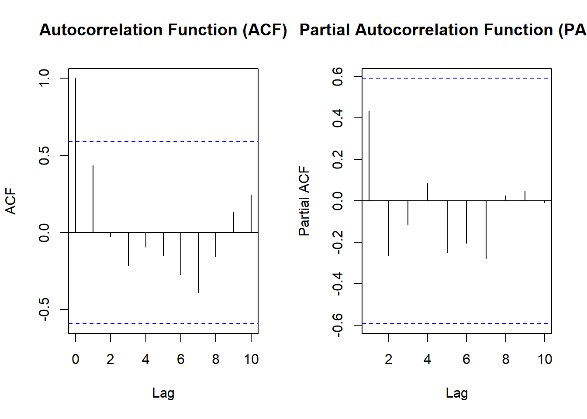
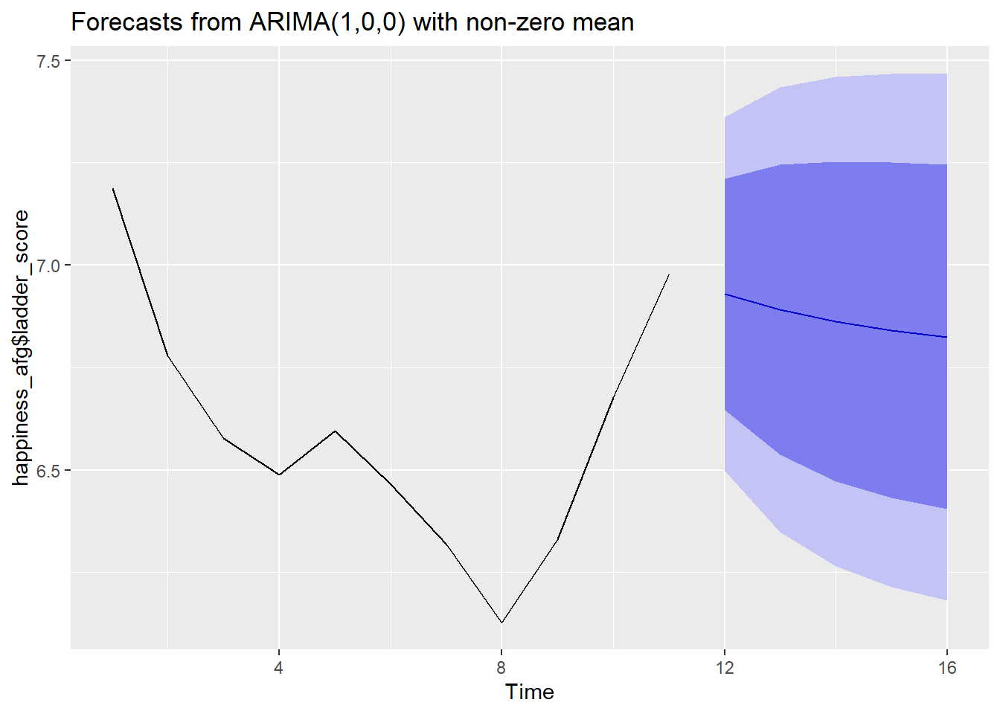
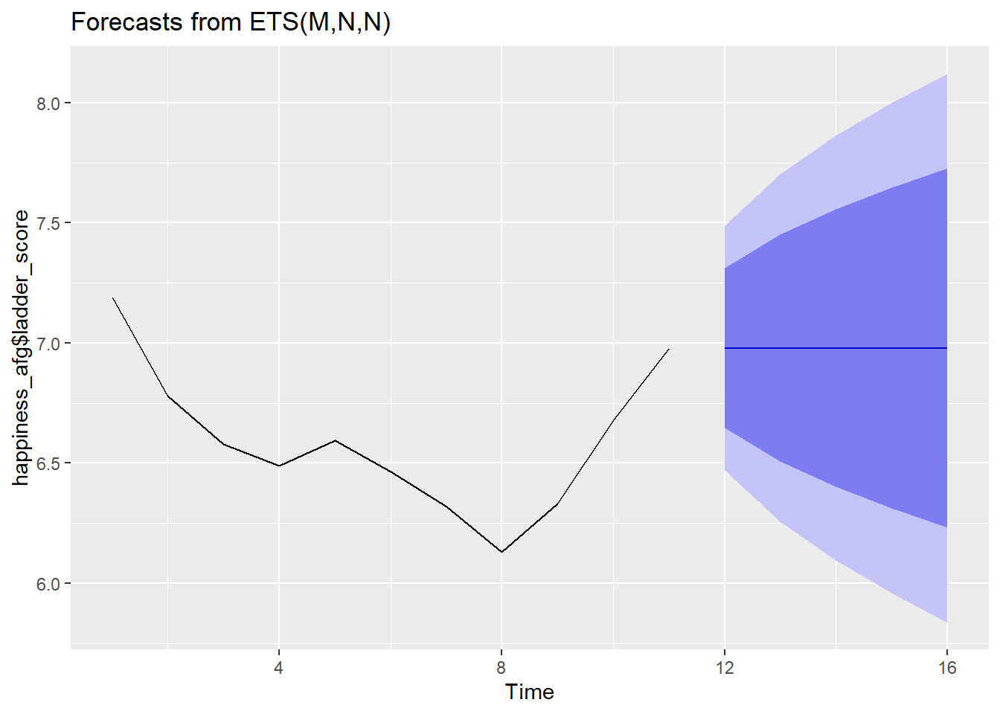
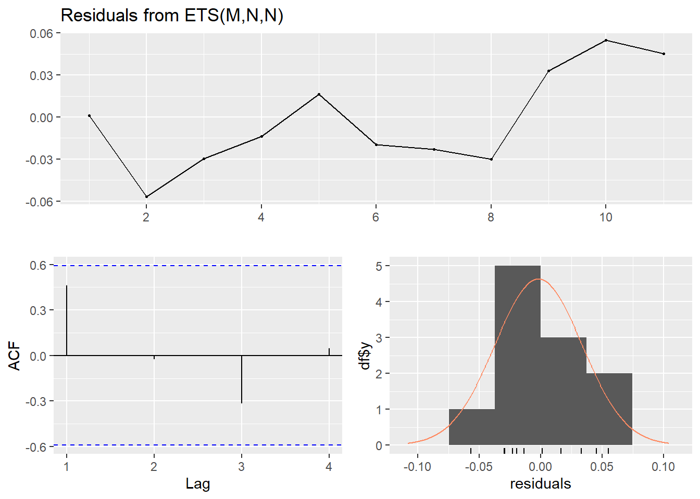
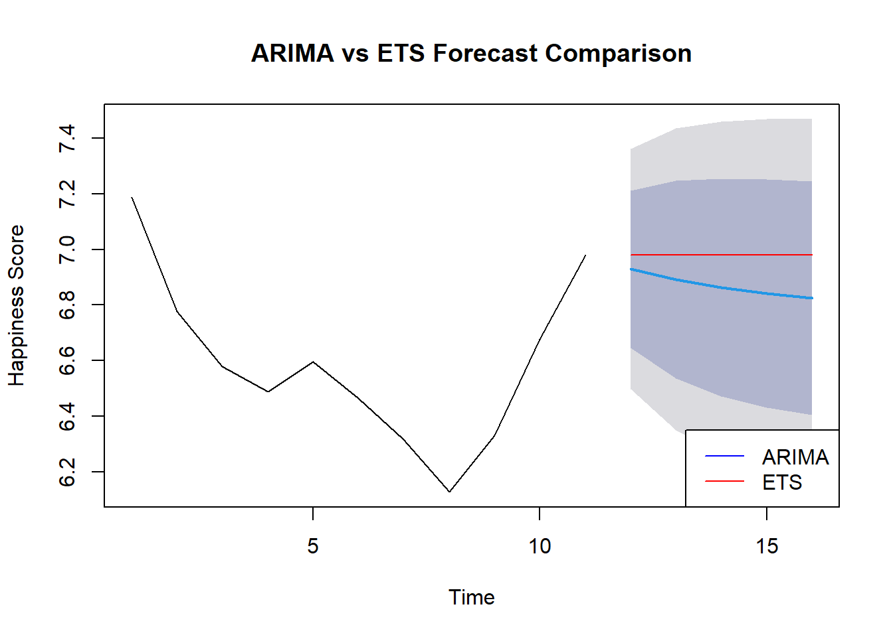
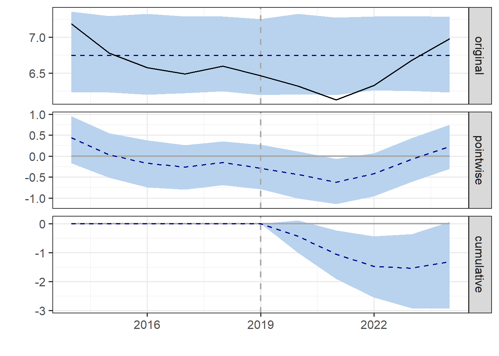
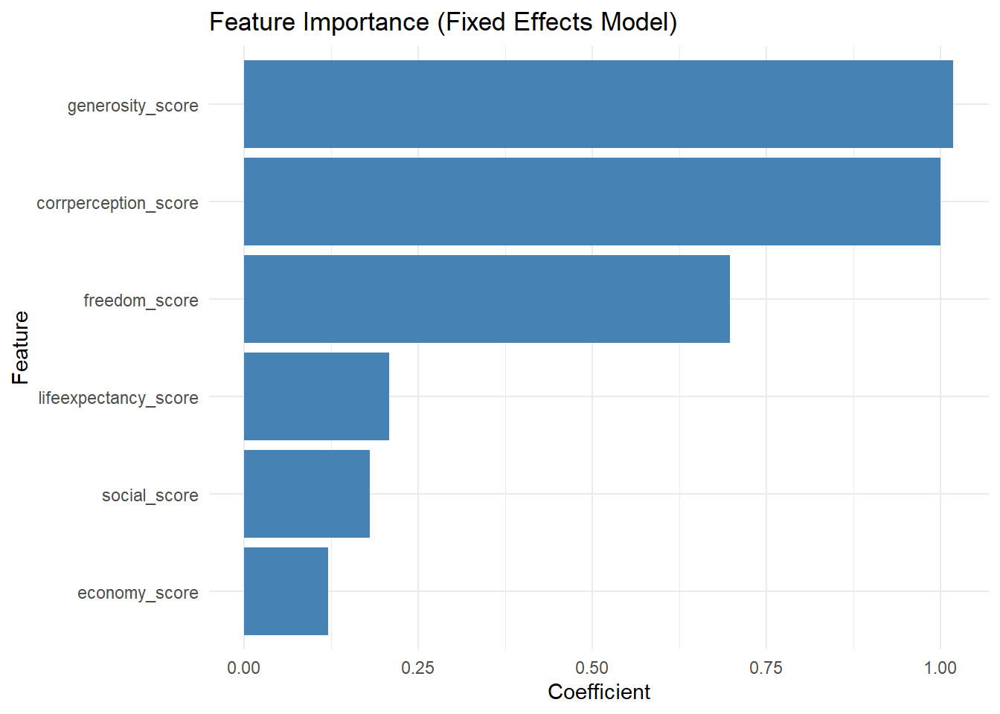

This take home exercise 3 will look into performing analysis for the final project.For my component we will looking into CDA, Time series and building an exploratory model using Panel regression.
2.Load Required Libraries
# Install and load required packages in one goif (!requireNamespace("pacman", quietly =TRUE)) install.packages("pacman")pacman::p_load(# Data Import & Manipulation readr, readxl, dplyr, tidyr, lubridate, # Exploratory Data Analysis (EDA) ggplot2, plotly, GGally, corrplot, skimr, # Geospatial Visualization maps, mapdata, sf, rnaturalearth, rnaturalearthdata, # Confirmatory Data Analysis (CDA) car, lmtest, randomForest, factoextra, cluster, # Time Series Analysis & Forecasting tsibble, feasts, fable, fabletools, forecast, tseries, urca, plm,# Additional Utilities janitor, stringr, zoo)# Check if all packages are successfully loadedsessionInfo()
Before forecasting, we need to determine whether the happiness score (or any other variable of interest) is stationary. A stationary time series has a constant mean and variance over time.
4.1 Augmented Dickey-Fuller (ADF) Test
The ADF (Augmented Dickey-Fuller) test is used to see if a time series is stationary. Here’s how to interpret the results:
The Hypothesis: The test has a null hypothesis that the data has a unit root, which means it’s not stationary. The alternative hypothesis is that the data is stationary or trend-stationary. The Output: The ADF test gives you a test statistic, a p-value, and critical values at different significance levels (like 1% or 5%).
Interpreting the p-value: A low p-value (less than your chosen significance level) means you reject the null hypothesis. In this case, that means the data is likely stationary.
Interpreting the test statistic: The test statistic is negative. The more negative it is, the stronger the evidence against the null hypothesis (i.e., stronger evidence for stationarity).
Augmented Dickey-Fuller Test
data: happiness_afg$ladder_score
Dickey-Fuller = -0.23859, Lag order = 2, p-value = 0.9862
alternative hypothesis: stationary
From the above results, we see that the p-value is still greater than 0.05 hence the data is still not stationary hence we will perform a first difference and then run the ADF test again.
library(dplyr)library(tseries) # For ADF test# Apply differencing using lag() to avoid length mismatchhappiness_afg <- happiness_afg %>%mutate(diff_ladder_score = ladder_score -lag(ladder_score))# Run ADF test on the differenced dataadf_test_diff <-adf.test(na.omit(happiness_afg$diff_ladder_score), k =2)print(adf_test_diff)
Augmented Dickey-Fuller Test
data: na.omit(happiness_afg$diff_ladder_score)
Dickey-Fuller = NaN, Lag order = 2, p-value = NA
alternative hypothesis: stationary
Now the data is stationary and we can proceed with other analysis
5.Decomposing Time Series
Time series decomposition is a fundamental technique used to break down a time series into its primary components: trend, seasonality, and residual.
Trend: The trend component of a time series represents the long-term movement or direction of the data. It captures the underlying, persistent behavior of the series, which may be characterized by a gradual increase, decrease, or stability over an extended period
Residual: The residual component, also known as the error or irregular component, captures the random fluctuations or noise in the time series data that cannot be explained by the trend or seasonality. Residuals are the unexplained variability within the data, often reflecting the influence of unpredictable or external factors
From this plot we can interpretation the following : The declining trend from 2015 to around 2020 suggests that happiness levels were decreasing during this period.
The upward trend after 2020 shows an improvement in happiness scores.
The remainder (residuals) fluctuates, meaning there are some short-term variations that the trend component does not explain.
6. ACF and PACF interpretation
The Autocorrelation Function (ACF) The ACF plots the correlation of the time series with itself at different lags. This helps in identifying patterns such as seasonality, trends, and the persistence of values over time.
Partial Autocorrelation Partial autocorrelation measures the correlation between observations at two time points, accounting for the values of the observations at all shorter lags. This helps isolate the direct relationship between observations at different lags, removing the influence of intermediary observations.
par(mfrow =c(1,2)) # Set layout for side-by-side plotsacf(happiness_afg$ladder_score, main ="Autocorrelation Function (ACF)")pacf(happiness_afg$ladder_score, main ="Partial Autocorrelation Function (PACF)")

Based on the plots :
The significant spike at lag 1 in both plots suggests that happiness in one time period is directly influenced by happiness in the immediately preceding time period. This makes intuitive sense - national happiness tends to have some momentum rather than changing dramatically between measurements. The AR(1) pattern indicates that a country’s happiness score can be reasonably modeled as depending primarily on its previous year’s score plus some random variation. The spike at lag 10 might suggest:
A cyclical pattern in happiness that repeats approximately every 10 time periods Potential correlation with economic or political cycles Possible influence of longer-term social changes
The pattern suggests that immediate past happiness is a strong predictor of current happiness, but the relationship weakens as you look further back in time. This aligns with how social and economic factors that influence happiness tend to evolve gradually rather than changing abruptly.
happiness_region <- world_happiness_data %>%group_by(year, region) %>%summarize(ladder_score =mean(ladder_score, na.rm =TRUE))# Convert to tsibble for time series analysishappiness_region <- happiness_region %>%as_tsibble(index = year, key = region)# STL decomposition for each regionhappiness_decomp_region <- happiness_region %>%model(STL(ladder_score ~trend(window =7) +season(window ="periodic")))# Plot decomposition for regionshappiness_decomp_region %>%components() %>%autoplot()
# A tibble: 42 × 6
# Groups: region [6]
region term estimate std.error statistic p.value
<chr> <chr> <dbl> <dbl> <dbl> <dbl>
1 Africa (Intercept) 2.99 0.144 20.7 1.02e-67
2 Africa economy_score 0.676 0.102 6.66 7.99e-11
3 Africa social_score 0.363 0.0976 3.72 2.25e- 4
4 Africa lifeexpectancy_score 0.830 0.168 4.94 1.10e- 6
5 Africa freedom_score 0.408 0.186 2.20 2.86e- 2
6 Africa generosity_score 1.63 0.394 4.13 4.38e- 5
7 Africa corrperception_score -0.604 0.378 -1.60 1.11e- 1
8 Americas (Intercept) 2.94 0.197 14.9 2.62e-36
9 Americas economy_score 0.608 0.0902 6.74 1.11e-10
10 Americas social_score 0.0395 0.130 0.305 7.61e- 1
# ℹ 32 more rows
Correlation Matrix and Regression analysis were done to understand which factor provides more influence but after further research came to know that this is not very helpful as the data is time-series and we need to perfom Panel regression to undersand better since we need to compare in one year what factors have made the difference and not just all the factors in the data. Random forest
9. Random Forest
library(randomForest)# Remove non-numeric columnshappiness_rf <- world_happiness_data %>%select(-c(country, region)) %>%na.omit()# Fit Random Forest Modelset.seed(123)rf_model <-randomForest(ladder_score ~ ., data = happiness_rf, importance =TRUE)# Show importance scoresimportance(rf_model)
As based on these models we see economy score as being highly important but later we will see how it changes when we conduct a Panel Regression model.
10. Time Series Forecast
In this next section we will perform a time series forecast for the next 5 years to see how happiness factors for indiivual.
10.1 Arima Model Forecasting
We will use the Arima model to forecast since our data is stationary we can use the ARIMA(1,0,0)
library(forecast)# Fit an ARIMA modelarima_test <-arima(happiness_afg$ladder_score,order =c(1,0,0))arima_forecast <-forecast(arima_test, h =5)# Plot the forecastautoplot(arima_forecast)

10.2 Exponential smoothing ( ETS)
Now we will look into another time forecasting model which is the ETS (Error,Trend,Seasonal.Time series forecasting method that gives exponentially decreasing weights to past observations, with more recent data points having greater influence on forecasts.
# Fit an ETS modelets_model <-ets(happiness_afg$ladder_score)# Forecast the next 5 yearsets_forecast <-forecast(ets_model, h =5)# Plot the forecastautoplot(ets_forecast)

The ARIMA model forecasts a slight downward trend, while the ETS model predicts stability The ETS model shows more symmetrical confidence intervals that widen more dramatically The ARIMA model seems to be giving more weight to the recent upward trend in the data
Without additional metrics like AIC, BIC, or forecast error measurements, it’s difficult to determine which model performs better. The choice between them would depend on whether you believe the country’s happiness score is more likely to continue its recent momentum (favoring ARIMA) or revert to a stable level (favoring ETS).
Hence lets deep dive into further additional metrics to understand what is better
10.3 Comparing the two models
# Add accuracy metricslibrary(forecast)# Calculate accuracy metrics for both modelsarima_accuracy <-accuracy(arima_forecast)ets_accuracy <-accuracy(ets_forecast)# Print accuracy metricsprint("ARIMA Accuracy Metrics:")
[1] "ARIMA Accuracy Metrics:"
print(arima_accuracy)
ME RMSE MAE MPE MAPE MASE
Training set -0.04187671 0.2203664 0.2012032 -0.7299727 3.039551 0.9472843
ACF1
Training set 0.2294729
print("ETS Accuracy Metrics:")
[1] "ETS Accuracy Metrics:"
print(ets_accuracy)
ME RMSE MAE MPE MAPE MASE
Training set -0.01818682 0.2244143 0.1938272 -0.3137885 2.940931 0.9125575
ACF1
Training set 0.4497664
# Calculate information criteriaarima_aic <-AIC(arima_test)arima_bic <-BIC(arima_test)ets_aic <-AIC(ets_model)ets_bic <-BIC(ets_model)# Print information criteriacat("ARIMA AIC:", arima_aic, " ARIMA BIC:", arima_bic, "\n")
Ljung-Box test
data: Residuals from ARIMA(1,0,0) with non-zero mean
Q* = 3.2172, df = 3, p-value = 0.3593
Model df: 1. Total lags used: 4
checkresiduals(ets_model)

Ljung-Box test
data: Residuals from ETS(M,N,N)
Q* = 4.8705, df = 3, p-value = 0.1815
Model df: 0. Total lags used: 3
# Cross-validation (if you have enough data)# Using k-fold cross-validation for time seriesk <-5# Number of foldsif(length(happiness_afg$ladder_score) >10) { # Only if you have enough datalibrary(tseries)# Function to perform k-fold cross-validation cv_rmse <-function(model_type, ts_data, k) { n <-length(ts_data) fold_size <-floor(n/k) errors <-numeric(k-1)for(i in1:(k-1)) { train_end <- n - (k-i)*fold_size train_data <- ts_data[1:train_end] test_data <- ts_data[(train_end+1):(train_end+fold_size)]if(model_type =="arima") { model <-arima(train_data, order =c(1,0,0)) pred <-forecast(model, h = fold_size) } else { model <-ets(train_data) pred <-forecast(model, h = fold_size) } errors[i] <-sqrt(mean((test_data - pred$mean)^2)) }return(mean(errors)) } arima_cv_rmse <-cv_rmse("arima", happiness_afg$ladder_score, k) ets_cv_rmse <-cv_rmse("ets", happiness_afg$ladder_score, k)cat("ARIMA CV RMSE:", arima_cv_rmse, "\n")cat("ETS CV RMSE:", ets_cv_rmse, "\n")}
ARIMA CV RMSE: 0.3231794
ETS CV RMSE: 0.295597
# Plot both forecasts together for comparisonplot(arima_forecast, main="ARIMA vs ETS Forecast Comparison", xlab="Time", ylab="Happiness Score")lines(ets_forecast$mean, col="red")legend("bottomright", legend=c("ARIMA", "ETS"), col=c("blue", "red"), lty=1)

Based on the results ETS has a better choice for forecasting The ETS(M,N,N) model appears to be the better choice for forecasting happiness scores based on:
Better information criteria (substantially lower AIC and BIC) slightly better forecasting accuracy in cross-validation Comparable or better error metrics on the training data
11. Longitudinal Analysis
(Event-based Changes) Interrupted Time Series Analysis (ITS) is a method used to evaluate the impact of an event or policy change on a time series. For example, a policy shift like a new government initiative or an economic crisis could alter happiness scores.
CausalImpact package in R helps with this analysis. It uses Bayesian structural time series models to detect causal effects in time series data.
11.1 Casual Impact before and after covid
library(CausalImpact)library(dplyr)library(tidyr)library(zoo)# Select only relevant columns and ensure data is orderedhappiness_data <- happiness_afg %>%select(year, ladder_score) %>%arrange(year)# Convert to a properly structured time series (zoo object)happiness_ts <-zoo(happiness_data$ladder_score, order.by = happiness_data$year)# Define pre- and post-event periodspre_period <-c(min(happiness_data$year), 2019) # Adjust event year if neededpost_period <-c(2020, max(happiness_data$year)) # Ensure this is correct# Run CausalImpact analysisimpact <-CausalImpact(happiness_ts, pre.period = pre_period, post.period = post_period)# Print summary and plot resultssummary(impact)
Posterior inference {CausalImpact}
Average Cumulative
Actual 6.5 32.4
Prediction (s.d.) 6.7 (0.15) 33.7 (0.76)
95% CI [6.5, 7.1] [32.4, 35.4]
Absolute effect (s.d.) -0.26 (0.15) -1.31 (0.76)
95% CI [-0.59, 0.012] [-2.93, 0.061]
Relative effect (s.d.) -4% (2.2%) -4% (2.2%)
95% CI [-8.3%, 0.19%] [-8.3%, 0.19%]
Posterior tail-area probability p: 0.03219
Posterior prob. of a causal effect: 96.781%
For more details, type: summary(impact, "report")
summary(impact, "report")
Analysis report {CausalImpact}
During the post-intervention period, the response variable had an average value of approx. 6.49. In the absence of an intervention, we would have expected an average response of 6.75. The 95% interval of this counterfactual prediction is [6.47, 7.07]. Subtracting this prediction from the observed response yields an estimate of the causal effect the intervention had on the response variable. This effect is -0.26 with a 95% interval of [-0.59, 0.012]. For a discussion of the significance of this effect, see below.
Summing up the individual data points during the post-intervention period (which can only sometimes be meaningfully interpreted), the response variable had an overall value of 32.43. Had the intervention not taken place, we would have expected a sum of 33.74. The 95% interval of this prediction is [32.37, 35.36].
The above results are given in terms of absolute numbers. In relative terms, the response variable showed a decrease of -4%. The 95% interval of this percentage is [-8%, +0%].
This means that, although it may look as though the intervention has exerted a negative effect on the response variable when considering the intervention period as a whole, this effect is not statistically significant, and so cannot be meaningfully interpreted. The apparent effect could be the result of random fluctuations that are unrelated to the intervention. This is often the case when the intervention period is very long and includes much of the time when the effect has already worn off. It can also be the case when the intervention period is too short to distinguish the signal from the noise. Finally, failing to find a significant effect can happen when there are not enough control variables or when these variables do not correlate well with the response variable during the learning period.
The probability of obtaining this effect by chance is very small (Bayesian one-sided tail-area probability p = 0.032). This means the causal effect can be considered statistically significant.
plot(impact)

The analysis suggests COVID-19 had a substantial negative causal effect on happiness levels, with the impact deepening over time rather than showing immediate recovery. The model suggests that without the pandemic, happiness levels would have remained relatively stable around 6.7-6.8, but instead experienced a significant decline.
The aim of this analysis would be to use in shiny dashboard to allow users to compare covid affects in different countries.
12. Panel Regression for Time series data
12.1 Filter and convert to panel data structure
# Load datasetdf <- world_happiness_data %>%select(country, year, ladder_score, economy_score, social_score, lifeexpectancy_score, freedom_score, generosity_score, corrperception_score) %>%drop_na()# Convert to panel data structuredf <-pdata.frame(df, index =c("country", "year")) # Define panel index
12.2 Fit Fixed Effects (FE) and Random Effects (RE) Models
# Fixed Effects Model (FE)fe_model <-plm(ladder_score ~ economy_score + social_score + lifeexpectancy_score + freedom_score + generosity_score + corrperception_score, data = df, model ="within")# Random Effects Model (RE)re_model <-plm(ladder_score ~ economy_score + social_score + lifeexpectancy_score + freedom_score + generosity_score + corrperception_score, data = df, model ="random")
Hausman Test
data: ladder_score ~ economy_score + social_score + lifeexpectancy_score + ...
chisq = 241.97, df = 6, p-value < 2.2e-16
alternative hypothesis: one model is inconsistent
12.4 Refine fixed effect model
fe_model <-plm(ladder_score ~ economy_score + social_score + lifeexpectancy_score + freedom_score + generosity_score + corrperception_score, data = df, model ="within")summary(fe_model)
Oneway (individual) effect Within Model
Call:
plm(formula = ladder_score ~ economy_score + social_score + lifeexpectancy_score +
freedom_score + generosity_score + corrperception_score,
data = df, model = "within")
Unbalanced Panel: n = 172, T = 1-11, N = 1661
Residuals:
Min. 1st Qu. Median 3rd Qu. Max.
-1.5378219 -0.1535541 0.0049151 0.1622974 1.3152798
Coefficients:
Estimate Std. Error t-value Pr(>|t|)
economy_score 0.120782 0.051580 2.3416 0.01933 *
social_score 0.179850 0.042483 4.2334 2.443e-05 ***
lifeexpectancy_score 0.208487 0.084177 2.4768 0.01337 *
freedom_score 0.697978 0.087304 7.9948 2.589e-15 ***
generosity_score 1.018427 0.161291 6.3142 3.579e-10 ***
corrperception_score 1.000161 0.216147 4.6272 4.029e-06 ***
---
Signif. codes: 0 '***' 0.001 '**' 0.01 '*' 0.05 '.' 0.1 ' ' 1
Total Sum of Squares: 156.82
Residual Sum of Squares: 136.84
R-Squared: 0.12736
Adj. R-Squared: 0.023208
F-statistic: 36.0733 on 6 and 1483 DF, p-value: < 2.22e-16
12.5 Check model fit
library(performance)r2(fe_model) # R-squared for model fit
# R2 for Panel Data Regression
R2: 0.127
adj. R2: 0.023
Model Fit (R² and Adjusted R²) R² = 0.127: This means your model explains 12.7% of the variance in happiness scores.
Adj. R² = 0.023: Since it’s low, the model may not generalize well, and some variables may not contribute much.
Predictor
Estimate
p-value
Interpretation
Economy Score
0.1208
0.0193 *
Higher GDP increases happiness slightly.
Social Support
0.1799
2.4e-05 ***
Strong social connections improve happiness.
Life Expectancy
0.2085
0.0134 *
Longer life expectancy correlates with happiness.
Freedom
0.6980
2.6e-15 ***
Strongest effect: More freedom = significantly higher happiness.
Generosity
1.0184
3.6e-10 ***
More generous countries are much happier.
Corruption Perception
1.0002
4.0e-06 ***
Lower corruption perception strongly correlates with happiness.
🔹 Freedom, Generosity, and Corruption Perception have the strongest effects on happiness. 🔹 Economic growth matters but has a smaller impact than social and governance factors.
library(ggplot2)ggplot(coef_df, aes(x = Coefficient, y =reorder(Feature, Coefficient))) +geom_col(fill ="steelblue") +labs(title ="Feature Importance (Fixed Effects Model)", x ="Coefficient", y ="Feature") +theme_minimal()

13.2 Comparing models across regions
fe_model_asia <-plm(ladder_score ~ economy_score + social_score + lifeexpectancy_score + freedom_score + generosity_score + corrperception_score, data = world_happiness_data[world_happiness_data$region =="Asia",], model ="within")fe_model_europe <-plm(ladder_score ~ economy_score + social_score + lifeexpectancy_score + freedom_score + generosity_score + corrperception_score, data = world_happiness_data[world_happiness_data$region =="Europe",], model ="within")summary(fe_model_asia)
Oneway (individual) effect Within Model
Call:
plm(formula = ladder_score ~ economy_score + social_score + lifeexpectancy_score +
freedom_score + generosity_score + corrperception_score,
data = world_happiness_data[world_happiness_data$region ==
"Asia", ], model = "within")
Unbalanced Panel: n = 11, T = 38-47, N = 481
Residuals:
Min. 1st Qu. Median 3rd Qu. Max.
-1.419621 -0.230295 -0.012684 0.264592 1.479704
Coefficients:
Estimate Std. Error t-value Pr(>|t|)
economy_score 1.236156 0.097346 12.6986 <2e-16 ***
social_score 1.409796 0.100072 14.0878 <2e-16 ***
lifeexpectancy_score 0.127248 0.201444 0.6317 0.5279
freedom_score 1.389514 0.156108 8.9010 <2e-16 ***
generosity_score 0.014660 0.189350 0.0774 0.9383
corrperception_score 0.064666 0.242597 0.2666 0.7899
---
Signif. codes: 0 '***' 0.001 '**' 0.01 '*' 0.05 '.' 0.1 ' ' 1
Total Sum of Squares: 433.26
Residual Sum of Squares: 102.56
R-Squared: 0.76328
Adj. R-Squared: 0.75512
F-statistic: 249.359 on 6 and 464 DF, p-value: < 2.22e-16
summary(fe_model_europe)
Oneway (individual) effect Within Model
Call:
plm(formula = ladder_score ~ economy_score + social_score + lifeexpectancy_score +
freedom_score + generosity_score + corrperception_score,
data = world_happiness_data[world_happiness_data$region ==
"Europe", ], model = "within")
Unbalanced Panel: n = 11, T = 39-40, N = 437
Residuals:
Min. 1st Qu. Median 3rd Qu. Max.
-1.110267 -0.228354 0.032152 0.221191 1.119916
Coefficients:
Estimate Std. Error t-value Pr(>|t|)
economy_score 1.03223 0.19041 5.4210 1.002e-07 ***
social_score 0.99773 0.16078 6.2055 1.309e-09 ***
lifeexpectancy_score 0.89706 0.27951 3.2094 0.001432 **
freedom_score 1.42743 0.19049 7.4933 4.009e-13 ***
generosity_score 0.92950 0.22261 4.1754 3.618e-05 ***
corrperception_score 1.36855 0.18378 7.4469 5.475e-13 ***
---
Signif. codes: 0 '***' 0.001 '**' 0.01 '*' 0.05 '.' 0.1 ' ' 1
Total Sum of Squares: 293.91
Residual Sum of Squares: 55.091
R-Squared: 0.81256
Adj. R-Squared: 0.80542
F-statistic: 303.449 on 6 and 420 DF, p-value: < 2.22e-16
Based on this we can :
Europe’s model explains happiness better (higher R² & adjusted R²), meaning factors like economy, social support, life expectancy, freedom, generosity, and corruption perception explain more of the variance in happiness for European countries than for Asian countries.
Asia has greater overall variance in happiness (higher TSS), indicating that happiness is more heterogeneous across Asian countries compared to Europe.
Asia’s residual variance (RSS = 102.56) is higher than Europe’s (RSS = 55.091), suggesting that there are unobserved factors influencing happiness in Asia that are not captured by this model.
Policy Implications: Since the same model structure fits better for Europe, it might mean that happiness in Asia is influenced by additional cultural, societal, or economic factors not included in the model.
This means this can be useful for our dashboard to help understand which factors are more important in which region.
14. Conclusion
These analysis will help define the flow for dashboard
📌 Panel Model Validation ✔ Hausman test (Fixed vs. Random effects) ✔ R-squared values for different variations ✔ Serial correlation & heteroskedasticity tests
📌 Visualizations & Insights ✔ Coefficient plot ✔ Top features and their impact ✔ Predicted vs. actual scores
📌 Custom Panel Analysis ✔ Happiness trends for different regions ✔ Forecast future happiness based on past trends
📌 Interactive User Tools ✔ Compare happiness trends by country ✔ Simulate happiness scores with different factors